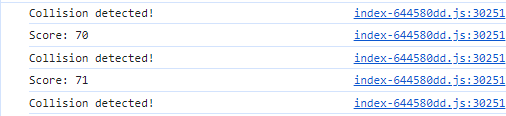

Element 5 includes the following:
Code 1 - scoring system
The following code is a scoring system for the game. When player pushes the ball aroudn the map, score increases. This happens when collision is detected.
1. Variable Declaration
"score" initializes a variable to store the score, starting with a value of 0. "scoreText" declares a variable of type TextBlock. T
his variable will be used to display and update the score in the user interface.
2. Function increaseScore
"increaseScore" is afunction that increments the score by 1,
updates the "scoreText" variable to display the new score, logs the score to the console, and allows for
additional custom logic based on specific requirements.
3. Function "createScoring"
"createScoring"is a function that creates a scoring user interface using the Babylon.js GUI library.
It creates a fullscreen UI ("AdvancedDynamicTexture") and initializes a TextBlock (scoreText) to display the score.
It sets properties such as text content, color, font size, and alignment to customize the appearance of the score display.
The scoreText is added to the UI using advancedTexture.addControl(scoreText).
4. Initialization
Initialization calls the "createScoring" function to set up the scoring UI. The resulting UI component is assigned to the "scoring" variable.